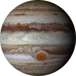

Юпитер
Юпитер — пятая планета от Солнца. Его масса вдвое
больше массы всех планет Солнечной системы, вместе
взятых. Классифицируется как газовый гигант. Среднее
расстояние от Солнца около 778,6 млн км . Представляет
собой сплюснутый вдоль полюсов сфероид
с экваториальным радиусом 71492 км. Период полного
обращения вокруг Солнца — 11,86 земных лет. Сутки
составляют всего 9,925 часа. Спутниковая система
Юпитера насчитывает как минимум 63 спутника,
из них 4 самых крупных — Ио, Европа, Ганимед
и Каллисто.Имеет слабо выраженную систему из трех
колец: два основных и одно очень тонкое, внутреннее.